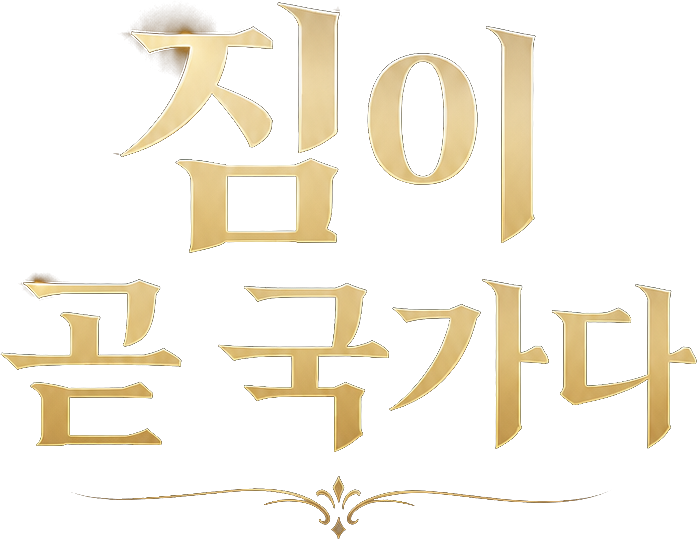

통치자 로그인
랭킹
TOP 10
PIN은 수업용 간이 인증입니다.다른 서비스에서 사용하는 비밀번호는 입력하지 마세요.
어서 오십시오
2999 홍길동
새로운 통치
왕국을 통치하시겠습니까?
최대 20턴. 선택은 즉시 영향을 주기도 하고, 몇 턴 뒤 예상치 못한 결과로 돌아오기도 합니다.
최고0
누적0
플레이0회
완주0회
1661년
TURN 1 / 20
왕국은 안정되어 있습니다.
특별 알현
TURN 5
세 사람이 국왕을 찾아왔습니다.단 한 명만 독대할 수 있습니다.
현재 국정 상태
선택에 주의하세요.선택받지 못한 인물에 따라 특정 계층이 불만을 가질 수 있습니다.
1715
태양왕의 시대가 끝났다.
708점
A
평화의 태양
최고 기록 순위-
누적 점수 순위-
획득 칭호
실제 루이 14세와 비교
0%수집 기록